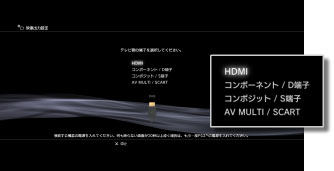
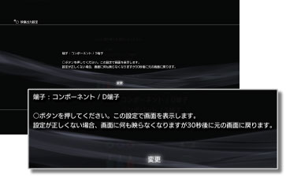
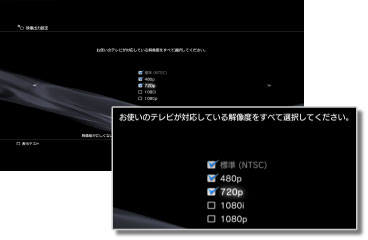
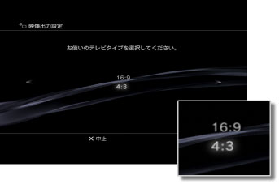
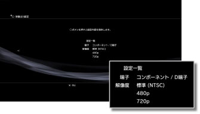

映像出力設定
PS3™の映像出力を設定します。お使いのテレビに合わせて、最適な出力設定を選んでください。
1. |
お使いのテレビの対応解像度を確認する。
テレビの種類によって、対応する解像度（画像方式）が異なります。詳しくは、テレビの取扱説明書をご覧ください。
|
2. |
 （設定）から （設定）から （ディスプレイ設定）を選ぶ。 （ディスプレイ設定）を選ぶ。
|
3. |
［映像出力設定］を選ぶ。
|
4. |
テレビ側の接続端子を選ぶ。
お使いの端子の種類によって、対応する解像度（画像方式）が異なります。

| テレビ側の入力端子 |
対応する画像方式（NTSC地域）*1 |
対応する画像方式（PAL地域）*1 |
| HDMI |
1080p / 1080i / 720p / 480p |
1080p / 1080i / 720p / 576p |
| コンポーネント / D端子*2 |
1080p / 1080i / 720p / 480p / 480i |
1080p / 1080i / 720p / 576p / 576i |
| コンポジット / S端子*3 |
480i |
576i |
| AV MULTI / SCART*4 |
480p / 480i |
576p / 576i |
| *1 |
PS3™の販売地域によって、画像方式の表示が異なります。北米やアジアなどのNTSC地域では、480iは［標準（NTSC）］と表示されます。ヨーロッパなどのPAL地域では、576iは［標準（PAL）］と表示されます。詳しくは、製品同梱の取扱説明書をご覧ください。
|
| *2 |
D端子は、主に日本地域で使われている規格です。D1～D5の対応解像度は次のとおりです。
D5：1080p / 720p / 1080i / 480p / 480i
D4：1080i / 720p / 480p / 480i
D3：1080i / 480p / 480i
D2：480p / 480i
D1：480i
|
| *3 |
コンポジットは、PS3™に付属されているAVケーブルを接続する端子です。
|
| *4 |
AV MULTIは、主に日本地域で使われている規格です。SCARTは、主にヨーロッパ地域で使われている規格です。［AV MULTI / SCART］を選んだときは、出力信号の種類を選ぶ画面が表示されます。
|
|
5. |
映像出力設定を変更する。
映像出力の解像度を変更します。手順4で選んだ端子の種類によっては、この画面は表示されません。

|
6. |
解像度を設定する。
お使いのテレビが対応している解像度をすべて選びます。選んだ解像度の中から、再生するコンテンツに合わせて最も高い解像度の映像が自動的に出力されます。*
* 映像の解像度は、1080p ＞ 1080i ＞ 720p ＞ 480p / 576p ＞ 標準（NTSC：480i / PAL：576i） の優先順位で出力されます。
手順4で［コンポジット / S端子］を選んだときは、この画面は表示されません。［HDMI］を選んだときは、自動設定を選ぶこともできます（接続しているHDMI機器の電源が入っている必要があります）。その場合、この画面は表示されません。

|
7. |
テレビタイプを設定する。
お使いのテレビに合わせてテレビタイプを選びます。手順4で［コンポジット / S端子］や［AV MULTI / SCART］を選んだときなど、SD解像度（NTSC：480p / 480i, PAL：576p / 576i）だけを出力するときに設定します。

|
8. |
設定内容を確認する。
テレビに正しい解像度で映像が表示されていることを確認します。方向キー  を押すと、前の画面に戻って設定をやり直すことができます。 を押すと、前の画面に戻って設定をやり直すことができます。

|
9. |
設定内容を保存する。
PS3™に映像出力設定の設定内容が保存されます。続けて、音声出力を設定できます。音声出力について詳しくは、（設定）＞ （サウンド設定）＞［音声出力設定］をご覧ください。 （サウンド設定）＞［音声出力設定］をご覧ください。
|
ヒント
- 映像出力の設定によっては、別売りの映像出力ケーブルが必要になります。詳しくは、製品同梱の取扱説明書をご覧ください。
- 映像出力設定がお使いのテレビと合っていない場合、解像度が切りかわるときに画面に何も表示されなくなることがありますが、しばらくすると自動的に元の解像度に戻ります。30秒以上待っても画面が表示されない場合は、一度電源を切ってください。そのあと、PS3™本体前面の電源ボタンに5秒以上ふれたままにして電源を入れてください。映像出力設定が標準的な解像度に変更されます。
- HDCP（High-bandwidth Digital Content Protection）規格に対応していない機器をHDMIケーブルで接続すると、PS3™からの映像および音声を出力できません。
- 著作権保護されたBlu-ray Discの映像を1080pの解像度で出力するには、HDCP規格に対応した機器にHDMIケーブルで接続する必要があります。